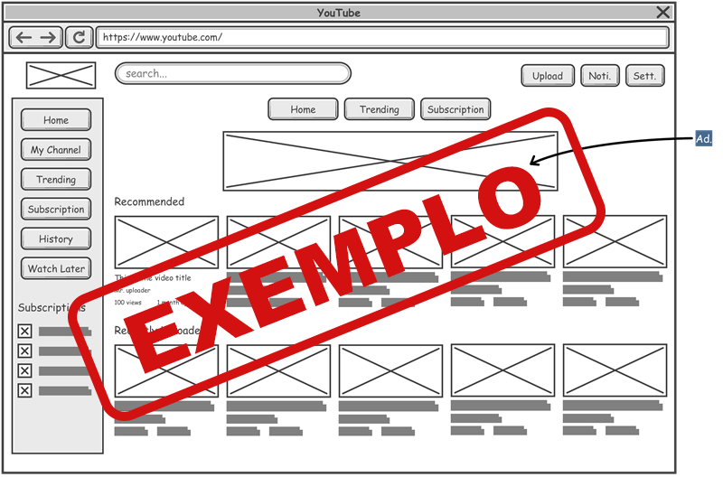
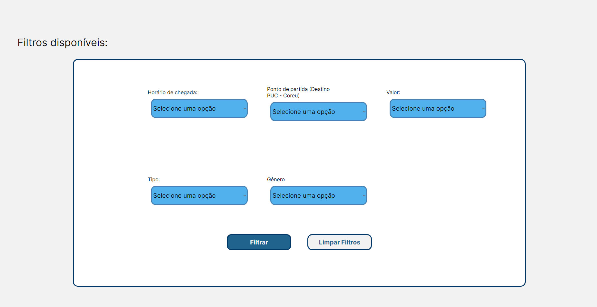

Introdução
Informações básicas do projeto como nome e membros da equipe.
Informações Gerais
- Projeto: Caroneiros
- Repositório GitHub: Template Trabalho Interdisciplinar
- Membros da equipe:
Contexto
Detalhes sobre o espaço de problema, justificativas e os objetivos do projeto.
Problema
O problema que nossa aplicação deve resolver está relacionado à dificuldade de encontrar, principalmente no ambiente universitário, pessoas que ofereçam carona ou que precisem de carona, além dos problemas que essas pessoas enfrentam em sua locomoção. Apesar dos meios de comunicação atuais, como páginas de redes sociais ou WhatsApp, ainda é muito difícil encontrar outros alunos que compartilhem de localizações semelhantes que também estejam procurando carona, por isso é interessante um aplicativo que consiga simplificar esse processo de procura, servindo também como um intermediador e facilitador para a proximidade e realização de novas amizades.
Objetivos
O objetivo do trabalho é desenvolver um software que facilite o encontro e diálogo entre motorista e passageiro de maneira simples e segura. Dois objetivos que estão entrelaçados com o objetivo central são: amenizar os gastos de um aluno motorista que vai para a faculdade diariamente e ajudar um aluno passageiro que procura mais conforto e menos tempo de viagem até a faculdade do que com o transporte público.
Justificativa
Decidimos trabalhar com esse tema, pois nós, como um grupo, identificamos que ele é uma questão recorrente entre os alunos de uma faculdade, no nosso caso a PUC Minas. Desse modo, esse projeto pode trazer benefícios sociais muito interessantes, já que visa auxiliar o encontro de caroneiros em faculdades, ajudando os estudantes que não possuem carro, assim como ajudando os que possuem, mas que não conseguem arcar tranquilamente com o valor da gasolina, reparos, etc. Portanto, com base em entrevistas que fizemos com alguns alunos, encontramos uma aprovação quase que imediata de um aplicativo assim, mesmo daqueles que não vão utilizar o app, pois viram a importância de algo do tipo.
Público-alvo
O público-alvo desse projeto consiste em universitários da PUC Minas, tanto os que possuem carros, quanto os que não possuem. Buscamos atingir esses dois espectros, pois nosso software fará justamente essa conexão entre esses usuários que querem passageiros independente do motivo: dirige sozinho, precisa de ajuda na gasolina, quer conversar, etc, e os qu e querem ir para a faculdade de carro, talvez por terem de acordar mais cedo para pegar o transporte público, tempo de locomoção, conforto, etc.
Concepção (Design Thinking)
Detalhes do processo de discovery do projeto.
Apresente o processo de discovery do projeto. Com foco na experiência do usuário, esse processo abrange a compreensão do contexto do problema e das características do usuário, a definição do problema, a geração de ideias, a prototipagem e a elaboração de uma proposta de solução
Processo de Design Thinking
O arquivo que se segue apresenta o resultado desse processo.
Apresente o processo de Design Thinking realizado pelo grupo e documentado por meio do software Miro. No documento apresentado, devem ser incluídos: (1) a matriz CSD, (2) o mapa de stakeholders, (3) as personas, (4) as respectivas propostas de valor e (5) o processo de ideação identificando as ideias levantadas e sua priorização.
Especificações do Projeto
Documentação das especificações do projeto.
Apresente as especificações do projeto, incluindo as histórias de usuário e os requisitos funcionais e não funcionais.
Histórias de Usuários
Com base na análise das personas foram identificadas as seguintes histórias de usuários:
Apresente aqui as histórias de usuário que são relevantes para o projeto de sua solução. As Histórias de Usuário consistem em uma ferramenta poderosa para a compreensão e elicitação dos requisitos funcionais e não funcionais da sua aplicação. Se possível, agrupe as histórias de usuário por contexto, para facilitar consultas recorrentes à essa parte do documento.
EU COMO...PERSONA |
QUERO/PRECISO...FUNCIONALIDADE
|
PARA...MOTIVO/VALOR |
|---|---|---|
| Usuários | CRUD meus dados/minha conta | Utilizar o software |
| Usuários | Filtrar pelo Motorista/Passageiro que desejo pegar/oferecer carona | Encontrar o mais próximo à mim, de melhor preço, e que me sinta mais a vontade |
| Motorista | Oferecer carona para um passageiro até a universidade onde ambos estudamos | Economizar tempo e compartilhar os custos de transporte |
| Motorista | Cadastrar meu carro e minha habilitação | Oferecer carona |
| Passageiro | Solicitar uma carona de um motorista até a universidade onde estudo | Economizar tempo e dinheiro em transportes públicos ou uber/99 |
Requisitos
As tabelas que se seguem apresentam os requisitos funcionais e não funcionais que detalham o escopo do projeto.
Com base nas Histórias de Usuário, enumere os requisitos da sua solução. Classifique esses requisitos em dois grupos:
- Requisitos Funcionais (RF): correspondem a uma funcionalidade que deve estar presente na plataforma (ex: cadastro de usuário).
- Requisitos Não Funcionais (RNF): correspondem a uma característica técnica, seja de usabilidade, desempenho, confiabilidade, segurança ou outro (ex: suporte a dispositivos iOS e Android).
Lembre-se que cada requisito deve corresponder à uma e somente uma característica alvo da sua solução. Além disso, certifique-se de que todos os aspectos capturados nas Histórias de Usuário foram cobertos.
Requisitos Funcionais
| ID | Descrição do Requisito | Prioridade | |
|---|---|---|---|
| RF-001 | BOTÃO DE CADASTRO NA TELA DE LOGIN (CASO NÃO TENHA CONTA E TENHA SELECIONADO A OPÇÃO LOGIN NA HOME PAGE) | ALTA | |
| RF-002 | BOTÃO DE LOGIN NA TELA DE CADASTRO (CASO TENHA CONTA E TENHA SELECIONADO A OPÇÃO CADASTRO NA HOME PAGE) | ALTA | |
| RF-003 | BOTÃO DE “ESQUECI A SENHA” NA TELA DE CADASTRO E NA TELA DE LOGIN | ALTA | |
| RF-004 | BOTÃO DE ALTERAR INFORMAÇÕES PESSOAIS NA TELA DE PERFIL | ALTA | |
| RF-005 | BOTÃO DE ANEXAR DOCUMENTOS DE MOTORISTA NA TELA DE PERFIL | ALTA | |
| RF-006 | BOTÃO DE FILTRAR BUSCA NA TELA DE CARONA | ALTA | |
| RF-007 | BOTÃO PARA PUBLICAR POST NA TELA DE CARONA | ALTA | |
| RF-008 | BOTÃO DE CONTATAR PASSAGEIRO OU MOTORISTA NA TELA DE CARONA | ALTA | |
| RF-009 | BOTÃO OPÇÃO DE MOTORISTA NA TELA DE POST | ALTA | |
| RF-010 | BOTÃO OPÇÃO DE PASSAGEIRO NA TELA DE POST | ALTA | |
| RF-011 | BOTÃO PARA PÁGINA DE HISTÓRICO DE CARONAS NA TELA DE FEED | ALTA | |
| RF-012 | BOTÃO PARA CONTATAR A PESSOA NO POST NA TELA DE FEED | ALTA |
Requisitos Não-Funcionais
| ID | Descrição do Requisito | Prioridade |
|---|---|---|
| RNF-001 | O sistema deve ser responsivo para rodar em um dispositivos móvel | MÉDIA |
Projeto de Interface
Artefatos relacionados com a interface e a interacão do usuário na proposta de solução.
Apresente a ideia de interface que está sendo prevista para o projeto. Inclua os wireframes, o user/screen flow e o protótipo interativo.
User/Screen Flow e Protótipo interativo
Artefatos relacionados com a interface e a interacão do usuário na solução proposta.
O fluxo de usuário (User Flow) é uma técnica que permite
ao desenvolvedor mapear todo fluxo de telas do site ou
app. Essa técnica funciona para alinhar os caminhos e as
possíveis ações que o usuário pode fazer junto com os
membros de sua equipe.

Um protótipo interativo apresenta o projeto de interfaces
e permite ao usuário navegar pelas funcionalidades como se
estivesse lidando com o software pronto. Veja o exemplo a
seguir.
Wireframes
Protótipo de telas do sistema em baixa fidelidade (rascunhos).
Os Wireframes são protótipos das telas da aplicação usados em design de interface para sugerir a estrutura de um site web e seu relacionamentos entre suas páginas. Um wireframe web é uma ilustração semelhante ao layout de elementos fundamentais na interface. 
Primeiras Páginas Wireframe - Home, Login e Cadastro
Páginas Wireframe - Perfil, Histórico de Caronas e Viajar
Últimas Páginas Wireframe - Criação de Post Carona (Motorista e Passageiro)
Metodologia
Detalhes sobre a organização do grupo e o ferramental empregado.
Nesta parte do documento, você deve apresentar a metodologia adotada pelo grupo, descrevendo o processo de trabalho baseado nas metodologias ágeis, a divisão de papéis e tarefas, as ferramentas empregadas e como foi realizada agestão de configuração do projeto via GitHub.
Coloque detalhes sobre o processo de Design Thinking e a implementação do Framework Scrum seguido pelo grupo. O grupo poderá fazer uso de ferramentas on-line para acompanhar o andamento do projeto, a execução das tarefas e o status de desenvolvimento da solução.
Ferramentas
Relação de ferramentas empregadas pelo grupo durante o projeto.
Liste as ferramentas empregadas no desenvolvimento do projeto, justificando a escolha delas, sempre que possível. Inclua itens como: (1) Editor de código, ferramentas de comunicação, ferramentas de diagramação, plataformas de hospedagem, entre outras.
| Ambiente | Plataforma | Link de Acesso |
|---|---|---|
| Processo de Design Thinking | Miro | https://miro.com/app/board/uXjVKdBzZPQ=/ |
| Repositório de código | GitHub | https://github.com/ICEI-PUC-Minas-PMGCC-TI/ti-1-pmg-cc-m-20241-g7-dificuldade-de-carona-e-uber |
| Hospedagem do site | Heroku | https://XXXXXXX.herokuapp.comNÃO HOSPEDAMOS NADA AINDA |
| Protótipo Interativo | MavelApp ou Figma | https://www.figma.com/file/pjnbkW8PP1KraUi7tI6AwD/Caroneiros?type=design&node-id=0-1&mode=design&t=54EKaRnnGlNsuwo8-0 |
Gestão do Projeto
Divisão de papéis no grupo e apresentação da estrutura da ferramenta de controle de tarefas (Kanban).
Apresente a divisão de papéis e tarefas entre os membros do grupo. Informe quem é o Scrum Master, o Product Owner e os desenvolvedores. Informe também quem é o responsável pela documentação do projeto.
Apresente o quadro de gerenciamento do time (Kanban), seu formato e as experiências na utilização dessa ferramenta (GitHub Projects)
- Apresentação / Slides: Felipe Barros e Marcella Belchior
- Documentação: Felipe Barros e Otavio Augusto Ferreira
- Processo de Design Thinking: Marcella Belchior, Bruna Fonseca e Felipe Barros
- Scrum Master: Marcella Belchior
- Product Owner: Equipe Inteira
Controle de Versão
Estrutura do fluxo de trabalho no ambiente do GitHub.
Discuta como a configuração do projeto foi feita na
ferramenta de versionamento (GitHub). Exponha como a
gerência de tags, merges, commits e branches é realizada.
Discuta como a gerência de issues foi realizada.

-
Descrição
Para o controle de versão do código, cada membro da equipe têm sua própria branch, a qual utiliza para resolver um dos problemas (issues) destacados no Kanban.
-
Utilização
Utilizamos da ferramenta do Github Desktop para toda a gerência e versionamento do código. Foi por meio desta ferramenta que demos os commits, merges, pull requests, entre outros. Ademais, houveram apenas 2 casos de conflito, os quais também foram tratados por meio desta ferramente e do site do Github.
Solução
Esta seção apresenta todos os detalhes da solução criada no projeto.
Apresente cada uma das funcionalidades que a aplicação fornece tanto para os usuários quanto aos administradores da solução.
Inclua, para cada funcionalidade, itens como: (1) titulos e descrição da funcionalidade; (2) Estrutura de dados associada; (3) o detalhe sobre as instruções de acesso e uso.
Video do Projeto
O vídeo a seguir traz uma apresentação do problema que a equipe está tratando e a proposta de solução.
O video de apresentação é voltado para que o público externo possa conhecer a solução. O formato é livre, sendo importante que seja apresentado o problema e a solução numa linguagem descomplicada e direta.
Utilize o recurso de compartilhamento via embed e inclua o vídeo logo abaixo.
...... COLOQUE AQUI O SEU VIDEO ......
Funcionalidades
Esta seção apresenta as funcionalidades da solução.
Apresente cada uma das funcionalidades que a aplicação fornece tanto para os usuários quanto aos administradores da solução.
Inclua, para cada funcionalidade, itens como: (1) titulos e descrição da funcionalidade; (2) Estrutura de dados associada; (3) o detalhe sobre as instruções de acesso e uso.
Funcionalidade 1 - Cadastro de Usuário
Permite o cadastro de uma nova conta no nosso site.
- Estrutura de dados: Usuário
-
Instruções de acesso:
- Abra o site e clique em cadastrar, no canto superior direito
- Preencha os campos solicitados
- Clique em cadastrar
Funcionalidade 2 - Login de Usuário
Permite o login em uma conta já cadastrada no site.
- Estrutura de dados: Usuários
-
Instruções de acesso:
- Abra o site e realize o cadastro
- No canto superior direito da página principal, clique em Login
- Preencha os campos obrigatórios com as informações da conta
Funcionalidade 3 - Edição de Perfil e Cadastro de Carro
Permite a edição do perfil da conta e o cadastro de um carro.
- Estrutura de dados: Carro
-
Instruções de acesso:
- Abra o site e realize o cadastro e o login
- Após o login, na página principal, clique em Perfil no canto superior direito
- Altera seu perfil ou cadastre um carro conforme desejado
Funcionalidade 4 - Página de caronas
Permite visualizar as corridas cadastradas
- Estrutura de dados: Visualização da estrutura de posts Carro
-
Instruções de acesso:
- Na tela de perfil, clique no ícone de carro no canto superior direito
- Nesta página é possível visualizar as corridas criadas
Funcionalidade 5 - Criação de posts
Permite criar novas corridas, tanto como motorista ou passageiro.
- Estrutura de dados: Usuário Carro
-
Instruções de acesso:
- Na página de caronas, clique no botão de Publicar
- Na página seguinte, selecione qual opção deseja (MOTORISTA ou PASSAGEIRO)
- Por fim, preencha os campos solicitados e clique em publicar
Funcionalidade 6 - Filtros
Permite filtrar as corridas que são exibidas
- Estrutura de dados: Posts Carro
-
Instruções de acesso:
- Na página de caronas, clique no botão de Filtrar
- Na página seguinte, preencha os campos solicitados e clique em filtrar

Funcionalidade 7 - Mapa
Permite visualizar as corridas, inserindo o ponto de destino e o de saída
- Estrutura de dados: Posts Carro
-
Instruções de acesso:
- Na página de caronas, clique no botão de Filtrar
- Na página seguinte, preencha os campos solicitados e clique em filtrar
Estruturas de Dados
Descrição das estruturas de dados utilizadas na solução com exemplos no formato JSON.
Apresente as estruturas de dados utilizadas na solução tanto para dados utilizados na essência da aplicação quanto outras estruturas que foram criadas para algum tipo de configuração
Nomeie a estrutura, coloque uma descrição sucinta e apresente um exemplo em formato JSON.
Estrutura de Dados - Cadastro/Login Usuários
Registro dos usuários do sistema utilizados para cadastrar um novo usuário.
const usuario = {
id: newId,
name: nome,
cpf: cpf,
telefone: telefone,
email: email,
sexo: sexo,
dataNascimento: dataNascimento,
senha: senha
};
Estrutura de Dados - Cadastro do carro
Estrutura dos dados do carro cadastrado
{
"carro": [
{
"id": 1,
"placa": "ABC-1234",
"marca": "Chevrolet",
"modelo": "Celta",
"ano": "2014"
}
]
}
Estrutura de Dados - Posts
Estrutura dos posts de corridas publicados no site. Tanto com motoristas ou passageiros.
{
"PostsMotoristas": [
{
"id": 1,
"nome": "Beutrano",
"tipo": "Motorista",
"descricao": "Estou disposto a oferecer carona, fazer novas amizades",
"valor": "Negociável",
"zonascarona": "Oeste e Noroeste",
"endereco": "Rua José Freitas 12 - Jardim"
}
],
"PostsPassageiros": [
{
"id": 1,
"nome": "Ciclana",
"tipo": "Passageiro(a)",
"descricao": "Preciso de carona e estou disposta a rachar a corrida",
"zonascarona": "Oeste",
"endereco": "Rua Lauro Ferrera 132 - Buritis"
}
]
}
Módulos e APIs
Esta seção apresenta os módulos e APIs utilizados na solução.
Apresente os módulos e APIs utilizados no desenvolvimento da solução. Inclua itens como: (1) Frameworks, bibliotecas, módulos, etc. utilizados no desenvolvimento da solução; (2) APIs utilizadas para acesso a dados, serviços, etc.
Images:
- Postimages - https://postimages.org/
Fonts:
- Google Fonts https://fonts.google.com/
Scripts:
- JSON Server https://www.npmjs.com/package/json-server
FAQ
Perguntas e respostas comuns associadas ao projeto.
Apresente uma lista de perguntas e respostas comuns associadas ao projeto. Inclua perguntas como: (1) detalhes de acesso e uso do projeto; (2) informações sobre a instalação e configuração da aplicação; (3) questões sobre a manutenção da aplicação; (4) detalhes sobre a integração da aplicação com outros sistemas; (5) questões sobre a segurança da aplicação.
Referências Bibliográficas
Esta seção apresenta as referências bibliográficas utilizadas no projeto.
Apresente as referências bibliográficas utilizadas no projeto. Inclua itens como: (1) livros, artigos, tutoriais, etc. utilizados no desenvolvimento da solução; (2) links para sites, blogs, etc. utilizados no desenvolvimento da solução.